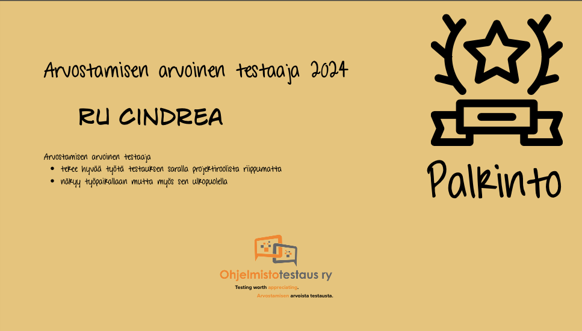

Arvostamisen arvoinen testaaja 2025
Julkaistu: 18.12.2025
Anssi Lehtelä on jatkuvan laadunrakentamisen ammattilainen, joka toimii integroituneena ohjelmistokehitystiimissä. Hänelle voi sovitella monenlaista hattua: testaaja, ryhmäohjelmoija, oppimisen fasilitoinnin osaaja.
Anssi on jakanut osaamistaan niin erinomaisena konferenssi- ja seminaaripuhujana, kuin aktiivisena yhteisön jäsenenä. Erityisen ansioituneella puheenvuorollaan epäonnistumisista hän on naurattanut ja inspiroinut kuulijoitaan.